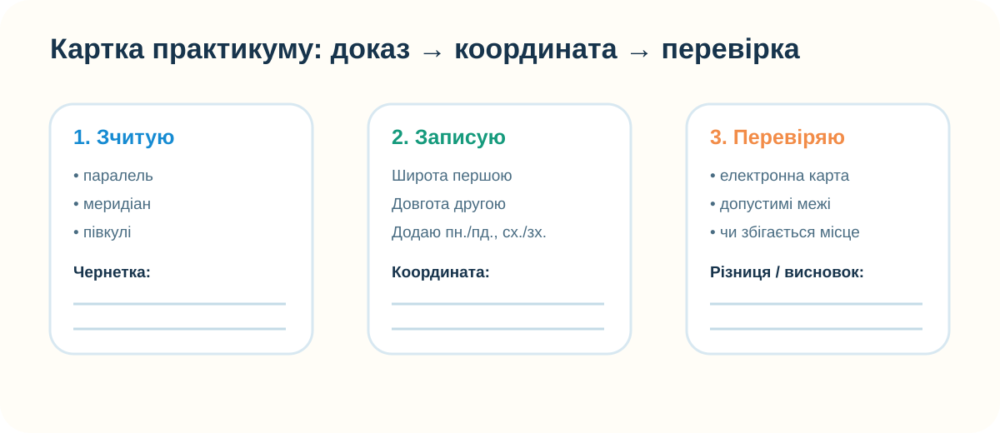
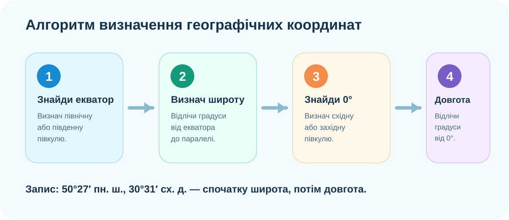

Практичний продукт уроку
До кінця заняття у вас має бути заповнена картка з трьома типами результатів: 1) координати об’єктів, визначені за картою; 2) назви об’єктів, знайдені за заданими координатами; 3) перевірка щонайменше двох відповідей в електронній карті з поясненням можливої похибки.

Станція 1. Відновіть алгоритм
Спочатку спробуйте скласти алгоритм без підказки. Розташуйте дії подумки, а потім звіртеся зі схемою.

Станція 2. Координатний тренажер
Рухайте повзунки. Спочатку назвіть координату точки самостійно, потім перевірте автоматичний запис.
Станція 3. Визначаємо координати реального об’єкта
На карті нижче позначено центр Києва. Не копіюйте готовий підпис маркера: спочатку оцініть координати за положенням міста відносно паралелей і меридіанів, потім відкрийте електронну карту для перевірки.
OpenStreetMap, Київ. Маркер: приблизно 50.4501° N, 30.5234° E.
Оцінка похибки
Чому в шкільному атласі ви можете отримати 50° пн. ш., 30° сх. д., а цифровий сервіс — 50.4501° N, 30.5234° E?
Станція 4. Знайдіть місце за координатами
Дано три «географічні адреси». Спочатку спрогнозуйте материк/регіон, а потім перевірте себе електронною картою.
48.86° N, 2.35° E
30.04° N, 31.24° E
33.87° S, 151.21° E
Перевіряйте координати через OpenStreetMap або інший електронний картографічний сервіс. У десятковому записі N/S/E/W відповідають пн./пд. ш. та сх./зх. д.
Станція 5. Реальна Земля без намальованої сітки

NASA Earth Observatory / Blue Marble.
Питання на доказ
На супутниковому зображенні немає видимих паралелей і меридіанів. Чому координатна система все одно працює?
Контроль меж
Яка координата неможлива?
Станція 6. Відео-перевірка практичного алгоритму
Відео, рекомендоване в КТП для практичної роботи «Визначення географічних координат».
Теорія після практики: стислий опорний конспект
Широта
Кутова відстань точки від екватора. Від 0° до 90°. Буває північна або південна.
Довгота
Кутова відстань від нульового меридіана. Від 0° до 180°. Буває східна або західна.
Запис
У шкільній практиці спочатку подаємо широту, потім довготу: 50° пн. ш., 30° сх. д.
Підсумок CER
Claim — твердження: «Географічні координати дають однозначну адресу точки на Землі».
Домашнє завдання
§6. Відкрийте електронний підручник і повторіть алгоритм. Потім оберіть будь-яке місто світу, знайдіть його координати у цифровій карті та запишіть їх у двох форматах: десятковому й шкільному (градуси + півкуля).
Додатково: порівняйте координати центра міста в двох різних сервісах. Якщо значення не збігаються повністю — поясніть, чому це не обов’язково помилка.
Контроль після практикуму — 10 балів
Тест відкриється лише після введення даних учня.